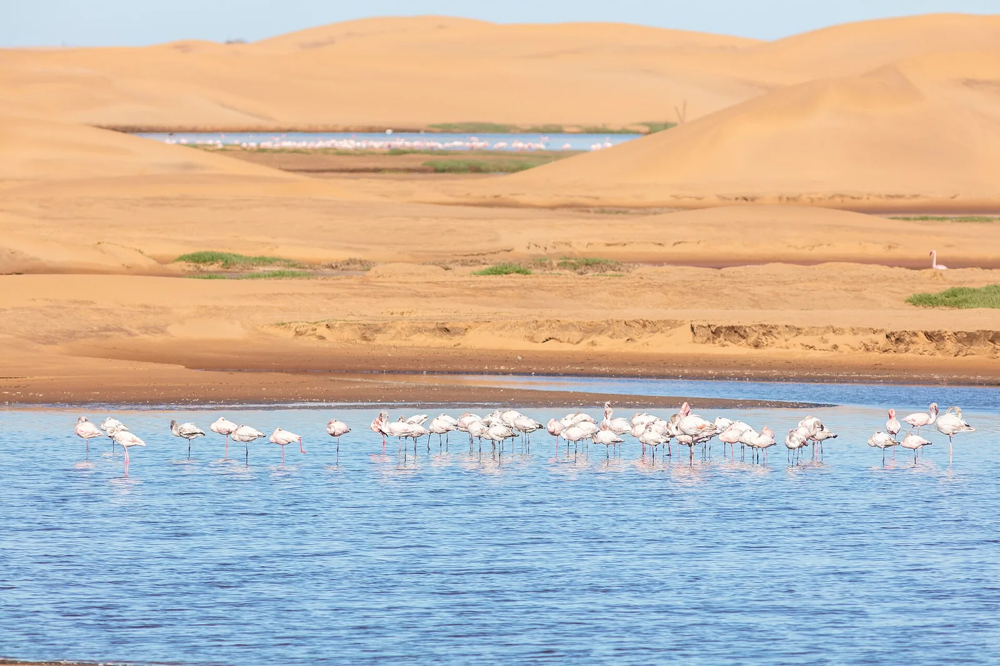

Lagune de Walvis Bay
Erongo, Namibie · kitesurf, windsurf

Grande lagune peu profonde au sud de la ville, balayée l’après-midi par un vent de sud-ouest souvent fort. Le plan d’eau plat attire kitesurfeurs et windsurfeurs, au milieu des flamants roses.
- Lieu
- Erongo, Namibie
- Niveau
- Intermédiaire
- Activités
- kitesurf, windsurf
- Type d'eau
- Mer / océan
- Coordonnées
- -22.98, 14.48 (position approximative du secteur)
Dangers à connaître
- Eau froide (courant de Benguela) : combinaison intégrale indispensable.
- Vent qui forcit vite l’après-midi, brouillard possible le matin.
- Zones sensibles pour les oiseaux : renseigne-toi sur les secteurs autorisés.
Le conseil d'Ocean Buddy
Garde tes distances avec les oiseaux et respecte les secteurs protégés de la lagune, classée site Ramsar.
Ouvrir dans Ocean Buddy Télécharger sur l'App Store
Source : Fiche Ocean Buddy · septembre 2026 · à vérifier localement.